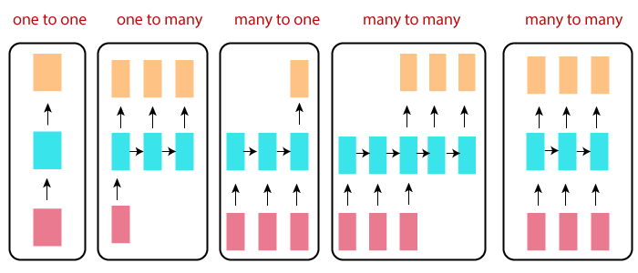
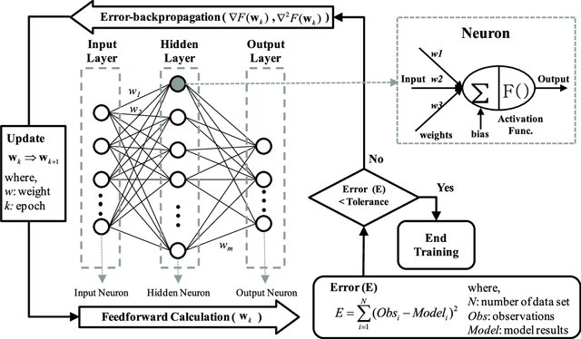
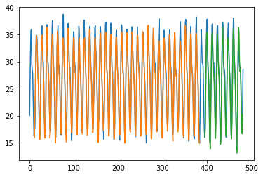
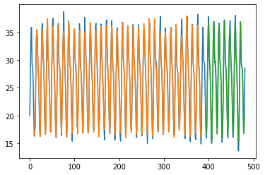
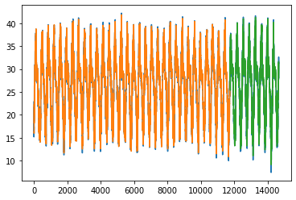

We Decided to use Time series models on the weather data of Janupur and make prediction on Temperature and Precipitation Values.
Models:
Auto Regression:
Uses past Values to make prediction.
\[
y_{t}=\beta_{0}+\beta_{1} y_{t-1}+\varepsilon_{t} \longrightarrow \mathrm{AR}(1)
\\
y_{t}=\beta_{0}+\beta_{1} y_{t-1}+\beta_{2} y_{t-2}+\varepsilon_{t} \longrightarrow \mathrm{AR}(2)
\\
y_{t}=\beta_{0}+\beta_{1} y_{t-1}+\beta_{2} y_{t-2}+.......+\beta_{P} y_{t-P}+\varepsilon_{t} \longrightarrow \mathrm{AR}(P)
\]
Moving-Average:
Uses past Error Values to make prediction.
\[
y_{t}=\beta_{0}+\theta_{1} \varepsilon_{t-1}+\varepsilon_{t} \longrightarrow \mathrm{MA}(1)\\
y_{t}=\beta_{0}+\theta_{1} \varepsilon_{t-1}+\theta_{2} \varepsilon_{t-2}+\varepsilon_{t} \longrightarrow \mathrm{MA}(2)\\
y_{t}=\beta_{0}+\theta_{1} \varepsilon_{t-1}+\theta_{2} \varepsilon_{t-2}+...............+\theta_{Q} \varepsilon_{t-Q}+\varepsilon_{t} \longrightarrow \mathrm{MA}(Q)\\
\]
ARMA Model:
\( \\ \quad y_{t}=B_{0}+B_{1} y_{t-1}+...+B_{P} y_{t-P}+\theta_1 \varepsilon_{t-1}+.....+\theta_Q \varepsilon_{t-Q}+\varepsilon_{t} \longrightarrow ARMA(P,Q)\\
\)
\(\varepsilon_{n}\) is the error in \(y_{n}\) prediction.
\(\beta_i\) and \(\theta_j\) are coefficients.
We have used ARIMA,SARIMA,SARIMAX models in the Prediction.The Detail can be found in midsem presentaion.
Finding parameters for model:
We have used ACF plots, PACF plots and AIC scores to set the model function and find p,q,d,P,D,Q and s values.
We use ACF And PACF plots, which measure the correlation between current time period and previous time lags.
Auto Correlation Function:
Measure direct and indirect effect of previous time lags on current value.Used to find order of Moving Average Model.
Partial Auto Correlation Function:
Measure only direct effect of previous time lags on current value value.Used to find order of Auto Regressive Model.
AIC:
We mainly used AIC score for model fitting upto ARIMA model but for SARIMAX we used the ACF and PACF plots to set the model function.AIC lets us to test how well our model fits the data set without over-fitting it. The AIC score rewards models that achieve a high goodness-of-fit score and penalizes them if they become overly complex.
Here are Plots of Temperature Prediction found from different models.Link to Midsem report.
Monthly Average Temperature Prediction using ARIMA(4,0,4)}:
Trained for 450 months and Tested for next 30 months. It has a RMSE of 2.935 for Mean temp being 25.051 and AIC = 1878.252.
Monthly Average Temp Prediction SARIMA((2,0,2),(3,0,3,12)):
Trained for 450 months and Tested for next 30 months.
It has a RMSE of 1.820 for Mean temp being 25.051 and AIC = 1456.189
Monthly Average Temp Prediction SARIMAX (Surface Pressure)((2,0,2),(3,0,3,12))}:Trained for 450 months and Tested for next 30 months.
It has a RMSE of 1.75 for Mean temp being 25.051 and AIC = 1450.676
Monthly Average Temp Prediction SARIMAX (Precipitation)((2,0,2),(3,0,3,12))
Trained for 450 months and Tested for next 30 months.
It has a RMSE of 1.658 for Mean temp being 25.051 and AIC = 1405.498.
Time Series Based Models Worked Quite Well.Next, We wanted to try RNN Models for prediction.
RNN Model(Post Midsem)
Recurrent Neural Networks and why we choose it:
RNNs are the types of neural networks designed for capturing information from sequences or time
series data.
Problems with ANN
Variable size of input/output neurons.
In timeseries we may change the number of inputs at a time to the neural network, so for that we have set the fixed number of neurons in a layer to a high value. But in RNNs this does not happen.
Too much computations.
In ANN we have to feed vectors representing each data point and the result (prediction)
will also be similar type of data vectors. So it will be a too much
computation.
No parameter sharing
In the above diagram, a chunk of neural network, A, looks at some input x_t and outputs a value h_t. A loop allows information to be passed from one step of the network to the next.
A recurrent neural network can be thought of as multiple copies of the same network, each passing a message to a successor. Consider what happens if we unroll the loop:
This chain-like nature reveals that recurrent neural networks are intimately related to sequences and lists. They are the natural architecture of neural network to use for such data.
Types of RNNs:
RNNs are the types of neural networks designed for capturing information from sequences or time
series data.
One to one
One to many
Many to one
Many to many

Problems in RNNs:

Vanishing gradient
As numbers of hidden layers grows, gradient become very small and weights will hardly change.This will hamper the learning process.
Exploding Gradient
When individual derivatives are large,the final derivate will also become huge and weights would change drastically.
Vanishing gradient problem is more in case of timeseries prediction.
LSTM :The saver
Long Short Term Memory networks – usually just called “LSTMs” – are a special kind of RNN, capable of learning long-term dependencies. They were introduced by Hochreiter & Schmidhuber (1997).LSTMs are explicitly designed to avoid the long-term dependency problem.
All recurrent neural networks have the form of a chain of repeating modules of neural network. In standard RNNs, this repeating module will have a very simple structure, such as a single tanh layer.
LSTMs also have this chain like structure, but the repeating module has a different structure. Instead of having a single neural network layer, there are four, interacting in a very special way.
Idea Behind LSTMs
The key to LSTMs is the cell state, the horizontal line running through the top of the diagram. It runs straight down the entire chain, with only some minor linear interactions. It’s very easy for information to just flow along it unchanged.
The LSTM does have the ability to remove or add information to the cell state, carefully regulated by structures called gates.Gates are a way to optionally let information through. They are composed out of a sigmoid neural net layer and a pointwise multiplication operation.
Trained for 374 months and predicting for next 86 months.
Blue colour is actual data, orange colur is Prediction for training data and green is the prediction for test data.

LSTM layer with 64 neurons and hidden dense layer with 32 neurons. We fit it for epochs=100 with loss in mean_squared_error and adam as optimizer.
Train Score: 1.36 RMSE
Test Score: 1.63 RMSE
Trained for 374 months and predicting for next 86 months.
Blue colour is actual data, orange colur is Prediction for training data and green is the prediction for test data.
Both LSTM layer with 100 neurons and hidden dense layer with 32 neurons. We fit it for epochs=100 with loss in mean_squared_error and adam as optimizer.
Train Score: 1.12 RMSE
Test Score: 1.47 RMSE
Trained for 374 months and predicting for next 86 months.
Blue colour is actual data, orange colur is Prediction for training data and green is the prediction for test data.
Bidirectional LSTM layer with 100 neurons and no hidden dense layer this time. We fit it for epochs=100 with loss in mean_squared_error and adam as optimizer.
Train Score: 1.20 RMSE
Test Score: 1.44 RMSE
Trained for 374 months and predicting for next 86 months.
Blue colour is actual data, orange colur is Prediction for training data and green is the prediction for test data.

ConvLSTM2D layer with 64 neurons and hidden dense layer with 32 neurons. We fit it for epochs=100 with loss in mean_squared_error and adam as optimizer.
Train Score: 1.16 RMSE
Test Score: 1.51 RMSE
Trained for 11724 days(80 %) and predicting for next 2923 days (20%) .
Blue colour is actual data, orange colur is Prediction for training data and green is the prediction for test data.

LSTM layer with 64 neurons and hidden dense layer with 32 neurons. We fit it for epochs=100 with loss in mean_squared_error and adam as optimizer.
Train Score: 1.07 RMSE
Test Score: 1.09 RMSE
Trained for 11724 days(80 %) and predicting for next 2923 days (20%) .
Blue colour is actual data, orange colur is Prediction for training data and green is the prediction for test data.
Both LSTM layer with 100 neurons and hidden dense layer with 32 neurons. We fit it for epochs=100 with loss in mean_squared_error and adam as optimizer.
Train Score: 1.06 RMSE
Test Score: 1.10 RMSE
Trained for 11724 days(80 %) and predicting for next 2923 days (20%) .
Blue colour is actual data, orange colur is Prediction for training data and green is the prediction for test data.
Bidirectional LSTM layer with 100 neurons and no hidden dense layer this time. We fit it for epochs=100 with loss in mean_squared_error and adam as optimizer.
Train Score: 1.08 RMSE
Test Score: 1.10 RMSE
Trained for 11724 days(80 %) and predicting for next 2923 days (20%) .
Blue colour is actual data, orange colur is Prediction for training data and green is the prediction for test data.
ConvLSTM2D layer with 64 neurons and hidden dense layer with 32 neurons. We fit it for epochs=100 with loss in mean_squared_error and adam as optimizer.
Train Score: 1.08 RMSE
Test Score: 1.10 RMSE


.png)
.png)


.png)